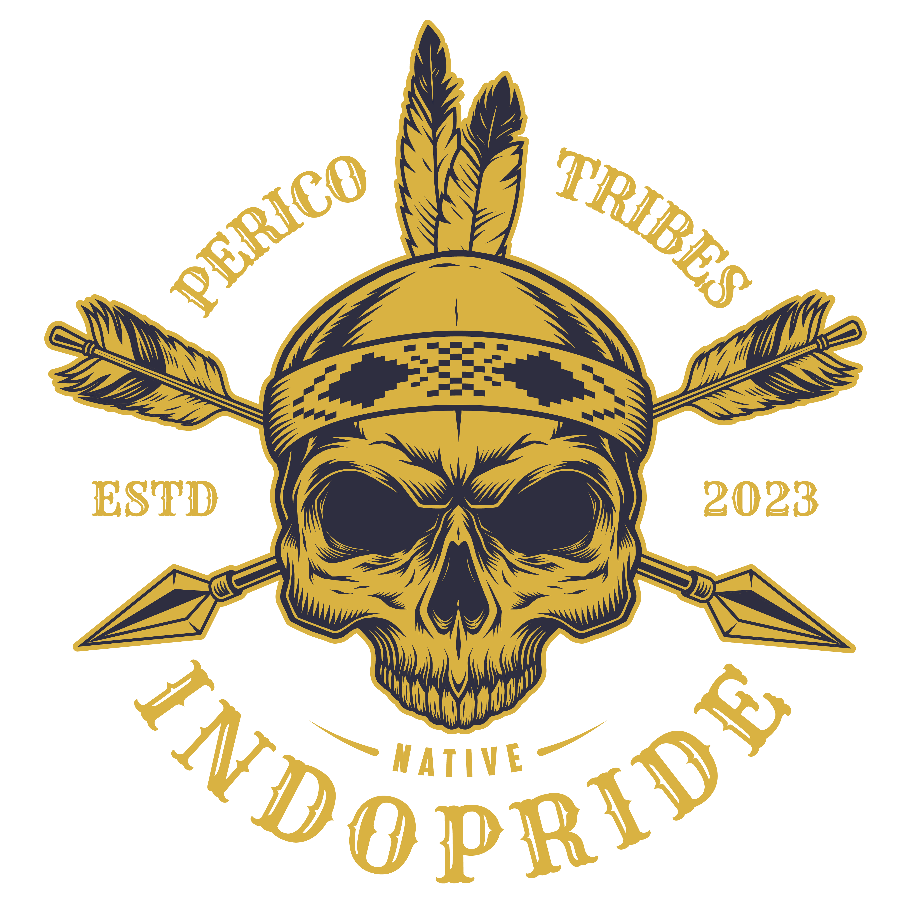

PERICO merupakan Komunitas Game Esport yang sekarang berfokus pada Game GTA V yang sudah dimodifikasi menjadi Roleplay.
Join Discord
Founder
Owner
Pengurus
Pengurus
Pengurus
Perico Tribes Indopride merupakan salah satu komunitas game terkemuka yang fokus pada game GTA V, yang telah dimodifikasi untuk pengalaman roleplay di server Indopride Roleplay. Komunitas ini pertama kali terbentuk pada awal tahun 2023, dengan Irgi Hunt dan Mexen Jacks sebagai pemimpin awal dan sepuh dari Perico Tribes. Perico dikenal sebagai suku yang sangat brutal, dengan karakteristik yang keras dalam menghadapi berbagai permasalahan. Keberadaannya yang tangguh menjadikannya sebagai salah satu suku tertua yang pernah menguasai Pulau Cayo Perico. Namun, seiring berjalannya waktu, sifat brutal dan seringnya melanggar aturan membuat Perico terpaksa diusir oleh Pangeran Hilton dari pulau tersebut. Setelah diusir, Perico memutuskan untuk berpindah dan menetap di Roxwood. Akan tetapi, ketidaknyamanan yang dirasakan oleh sebagian anggota membuat beberapa dari mereka memilih untuk meninggalkan Roxwood dan mencari tempat yang lebih aman. Menyadari pentingnya menjaga kelangsungan suku dan komunitas, Perico kemudian mencari generasi baru yang dapat memimpin dan mengelola suku ini. Irgi Hunt, sebagai pendiri dan pengurus utama, merekrut beberapa individu untuk memperkuat barisan, antara lain: Leo D, Syauqi Vidar, dan Quan. Namun, karena berbagai alasan, Irgi Hunt memutuskan untuk mundur dan meninggalkan Perico. Pada masa transisi tersebut, kepemimpinan Perico diambil alih oleh sekelompok individu yang terdiri dari Reyhan, Fatah, Ewok, Leo, Vidar, dan Quan. Mereka merencanakan untuk mengembalikan kejayaan Perico Tribes ke tempat asalnya, yakni Pulau Cayo Perico. Dengan tekad yang kuat, mereka membagi tanggung jawab dalam pengelolaan suku dan persiapan untuk kembali ke pulau yang telah lama mereka tinggalkan. Fatah dan Quan kemudian ditunjuk sebagai Sepuh Perico pada masa itu. Setelah menghadapi berbagai tantangan dan hambatan, akhirnya Perico berhasil diterima kembali untuk kembali ke rumah lamanya di Cayo Perico. Namun, seiring berjalannya waktu, kedudukan Sepuh Perico sempat mengalami perubahan, dimana Quan dan Fatah digantikan oleh Ewok dan Alex yang dipilih oleh pengurus untuk memimpin suku pada masa kini. Kini, Perico Tribes telah menjadi salah satu suku terlama dan paling berpengaruh, dengan kultur yang sangat kental dan identitas yang tak tergoyahkan, menjadikannya sebuah komunitas yang dihormati dan dikenal luas dalam dunia roleplay.
Sesepuh 1
Sesepuh 2
PERICO membuka kesempatan bagi perusahaan dan individu untuk bekerja sama dalam bentuk sponsor dan endorse. Kami juga terbuka untuk iklan dan kerja sama lainnya.
Hubungi kami di Discord untuk lebih lanjut.
© 2024 PERICO Official. All Rights Reserved.
Hak cipta dimiliki oleh: Muhamad Reyhan Al Adzid (Founder) & Baskara Leo (Owner)
IKUTI KAMI DI MEDIA SOSIAL